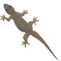

Sub Terranean Termites
Naturally termites are not a pest and their recycling of wood and other plant matter is of considerable ecological importance. It is only when they get into our house and start damaging its structure and wood; we consider them to be a pest. Termites are sometimes called "white ants", though they are not closely related to true ants. Two of the major types of termites are Drywood termites and Sub -terranean termites.
Control Measures
Termite Management
Because subterranean termites will die if exposed to air for an extended period of time, therefore they need constant moisture source for their survival. The mud tunnels provide protection from the open air and direct sunlight, allowing workers to forage for the food. Subterranean termites can form runways in the form of tunnels through cracks in concrete. Therefore even RCC structures are not exempt from these termites.
We are specialist in two types of Termite Pest Control services: (i.e White ants treatment)
Pre-construction Anti-Termite Treatment
Post-construction Anti-Termite Treatment
The basic purpose of creating a chemical barrier in the soil, along the building is interrupting the runways of termites that root through the termite colony in the soil. An essential component of any termite management programme is treating the floor by injecting extensively along the periphery of the building. Once a continuous barrier is created, they cannot safely return to their central colony nest through the chemically treated soil. It is an established fact that Termites are compelled to return every few days to their central colony nest in the ground to obtain moisture essential for their survival and to feed and groom the nymphs (young termites), the king, queen and other members of the colony.
Thus the successful installation of a chemical barrier into the soil requires lot of expertise and specialized equipment to form a complete and continuous barrier to protect the premises from a termite entry and future infestation.
If you detect a termite shelter tube or any other form of Termite infestation it is better to go for a solution by a professional pest control company than to handle it on your own.
Just read our section for very common questions asked by our clients about termites, infestation and it's treatment.
Damp walls and Roof or plumbing leaks can allow termites to survive above ground in a house. These should be corrected as soon as possible. Subterranean termites are capable of building a temporary nest (Satellite colony) in a ceiling or wall cavity where there is a regular moisture source, say from a leaking shower, broken roof tiles, faulty masonry or plumbing.
In the case of sever termite infestations in wood, it is advisable that the wood which is beyond repair, should be discarded least the healthy wood gets cross infested. It is a fact that termites damage commercial boards (like cupboards, almirah, wardrobes, wooden cabinets, wall wooden panelling etc.) more rapidly as compared to solid wood like chokaths (door and window frames).
Plaster of Paris (POP) on the walls and ceilings is commonly damaged by termites as it is made of cellulose. All cellulosic materials are favorite foods of termites like wood, paper, cardboard, fabric, Plaster of Paris etc. Formation of mud shelter tubes on the POP plastered walls is a common sight in modern houses.
Wood combined with plaster of paris is a lethal combination as it attracts termites due to moisture retention, sometimes it becomes a tough job even for a professional to control termites in POP plastered walls and ceilings , as termites form a non detectable cavity between plaster and walls.
Home owner's fetish for wooden flooring in modern houses is another factor which makes the houses vulnerable to termites infestation. Since the wooden flooring is directly in contact with the floor , therefore they are an easy target of termites. Treating termites in the wooden flooring needs special expertise and equipment. Remember, a combination of right pesticides along with the right application method and skilled workmanship yields long term control.
Treatment and Cost
Treatment cost for sub-terranean termites can be decided only after physically inspecting the premise as termite treatment cost is based on method of treatment, severity of infestation, structural factors, size of the house and the extent of damage. Just call our technical staff to get your premises thoroughly inspected free of cost. We offer our free termite inspection seven days a week and at the client's convenience.
Contact with our professional pest and termite control company to periodically inspect your home. This will help detect termite activity and allow for an early and proper action.
To control the termites in any premises the following two options/methods are available for our Clients. You can choose the cheaper termite treatment or the one which is more expensive. Regardless of the treatment cost, both methods have prove to be the most effective termite treatments.
NOTE: We provide termite control services in entire Karnataka state We have earned the reputation as one of the best Anti termite treatment company in Karnataka for the last 16 years
We Also provide Pest Control Services in Bangalore for below Pest Control Solutions
-
 Click Here...
Click Here... -
 Click Here...
Click Here... -
 Click Here...
Click Here... -
 Click Here...
Click Here... -
Click Here...